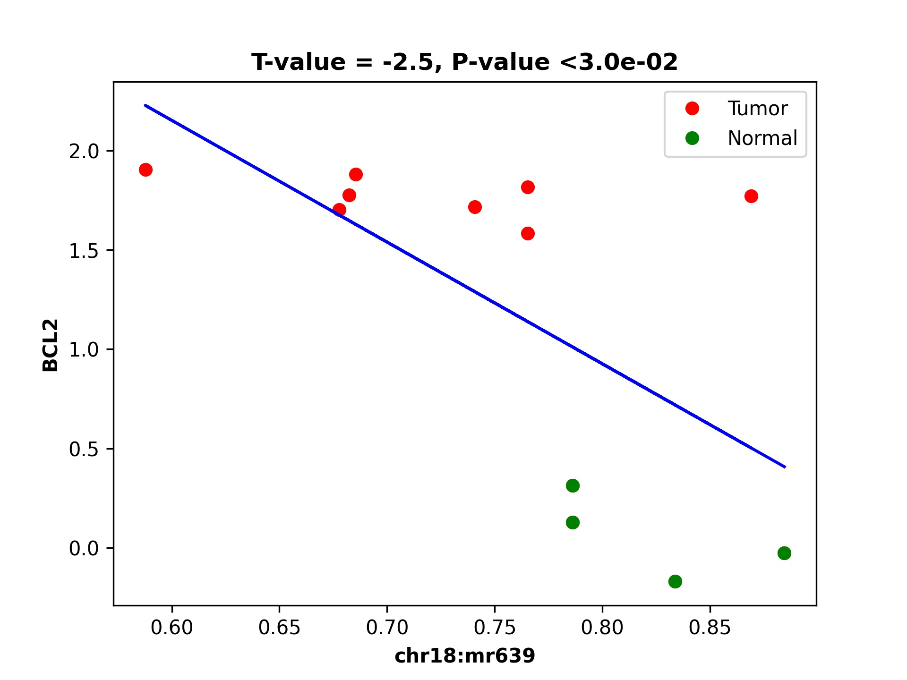

demoFLMR
This demo has five shell scripts. s1* should be run first, s2* should run second and so on for complete and correct run of the demo.
Step 0:
Generate predefined genomic regions files based on gene Code annotation:
OUT_FOLDER='../../data/fl_mr/in_data/in_genome_regions/'
IN_FOLDER='../../data/fl_mr/in_data/gencode/'
dmr_analysis dmr_gene_annotation -F ${OUT_FOLDER} -i no -l 10 \
-rem no -xL 50000000 -X 10000 -Y 10000 -M 10000 -N 1000000 -hu yes -n no \
-r ${IN_FOLDER}/gencode.v19.annotation_gene.refFlat \
-g ${IN_FOLDER}/hg19.chrom.sizes.clear.sorted
echo gene_annotation-DON
Please note that the script assumes certain file paths and data organization. Make sure to modify the paths according to your specific file structure and requirements. Also, remember to add the enhancer file manually in the list_region_files.txt file after running this script.
Here we assume
mutation blocks overlapping to enhancers and differential methylation regions are done (e.g., demo7 of bpb3 package)
and differential methylated regions (DMR) are already done by dmr_analysis
This script is similar to demo1 (e.g., integrated analysis of DEG, DMR, mutation blocks, and TAD - in paper https://pubmed.ncbi.nlm.nih.gov/35495111/) But we only consider mutation blocks that are overlapping with enhancers and differential DNA methylation regions The output folders: out_chromSegment, out_expression, out_genome, out_dds may need to be created manually!!
#path of main folder to output data
OUT_FOLDER='../../data/fl_mr/out_data/'
# path of input data folder
IN_FOLDER='../../data/fl_mr/in_data/'
#Path of mutation blocks and block summary file exported by bpb3 package
IN_BLOCKS=${IN_FOLDER}'/bpb3_demo7_mr_enhancers/out/mussd_blocks/'
IN_BLOCK_SUMMARY='blocks_summary.tsv'
#Path of mutation blocks with patient ID that will be exported by dds_analysis find_block_patientID
#IN_BLOCK_PATIENT=${IN_BLOCKS}'/blocks_summary_and_patientID2.tsv'
#Other INPUT PATH and files et al
#Convert bpb3 mutation blocks summary file to a bed format file with positions
dds_analysis bpb3summary2bed_format --in_block_summary_file ${IN_BLOCKS}/$IN_BLOCK_SUMMARY
echo ${IN_BLOCKS}'/'${IN_BLOCK_SUMMARY}
echo "preprocess_data - Done"
replace='_block_position.bed'
finds='.tsv'
IN_BLOCK_FILE=${IN_BLOCK_SUMMARY//$finds/$replace}
#Input path of a list of predefined genomic regions that will be used to map mutation blocks, and DMRs.
IN_GENOME_REGIONS=${IN_FOLDER}'/in_genome_regions/'
IN_LIST_REGIONS='list_region_files.txt_gencode'
IN_GENOME_refFlat=${IN_GENOME_REGIONS}'/data/gencode.v19.annotation_gene.ref_clean_sorted.bed'
#path of genome lib information files such as TAD, chromatin segment, and genome files et al
IN_GENOME_LIB='../../data/'
#path of chromatin segment files that will be used to intersect with mutation blocks
IN_CHROMSEG=${IN_GENOME_LIB}'/chromSegment/hg19/'
#path of TAD information that will be used to map mutation blocks
IN_TAD=${IN_GENOME_LIB}'/in_tad/'
#path to common TAD positions across 5 human cell lines
IN_TAD_INFO=${IN_TAD}'/Table4_TAD_annotations_sorted_chr.bed'
#path to common TAD boundary position among 5 human cell lines
IN_TAD_BOUNDARY=${IN_TAD}'/Table1_common_boundaries_merged_sorted_chr.bed'
#path to gene positions in sorted bed format which is generated by s1_run_annotation.sh
IN_GENE_POSITION=${IN_GENOME_REGIONS}'data/gene_Up1_Down1removedShort.bed'
#Path of differentially methylated regions, differentially expressed genes, and output folder for mutation blocks mapped to predefined genomic regions.
#Input path to DMRs/MRs predicted and ranked by dmr_analysis
IN_DMR=${IN_FOLDER}'/DMR_CpG_context/2_chroms_all_mr_data_range_dmrRanking.bed'
#path to DEG genes exported from bpb3 package
IN_EXPRESS=${IN_FOLDER}'/in_DEG/differentially_expressed_genes_nonfolder.txt'
#add N bp flank region on the two sides of mutation blocks before intersecting them to DMRs
FLANK_BP=0
#OUTPUT PATH
#path for exporting mutation blocks mapped to predefined genomic regions
OUT_GENOME=${OUT_FOLDER}'/out_genome/'
#path for exporting mutation blocks mapped to chromatin segmentations
OUT_CHROMSEG=${OUT_FOLDER}'/out_chromSegment/'
#path for exported mutation blocks associated with DEGs
OUT_EXPRESS=${OUT_FOLDER}'/out_expression/'
#path for final results
OUT_FINAL=${OUT_FOLDER}/'out_DmrDeg2block'
Block summary input file is following:
block_id chrom start_pos end_pos number_of_mutations number_of_patients mutation_distribution region_names
block_2_18_60987833_60988552 18 60987808 60988576 118 9 35,21,13,8,11,9,8,5,8 chr18:mr22253:hypo:D
block_1_18_60984827_60987028 18 60984802 60987052 160 9 24,32,10,22,5,22,24,6,15 chr18:mr22251:hyper:D,chr18:mr22252:hypo:D,chr18:mr22253:hypo:D
block_0_18_60983893_60984144 18 60983868 60984168 22 4 8,4,9,1 chr18:mr22250:hyper:D,chr18:mr22251:hyper:D,chr18:mr22252:hypo:D,chr18:mr22253:hypo:D
DMR file: 2_chroms_all_mr_data_range_dmrRanking.bed
chr18 57001634 57003436 chr18:mr0:mix:U 0.1308206406073999
chr18 57005127 57007836 chr18:mr1:mix:U 0.0674646718818239
chr18 57012900 57015233 chr18:mr2:mix:U 0.08007764185618908
chr18 57017008 57018986 chr18:mr3:hypo:U 0.0020920250443539944
chr18 57019993 57020668 chr18:mr4:mix:U 0.3942126190276321
chr18 57022124 57027729 chr18:mr5:hypo:D 0.9998645092181799
chr18 57028952 57030829 chr18:mr6:hypo:D 0.9999113822308282
chr18 57033570 57042036 chr18:mr7:mix:U 0.16519832525306027
chr18 57043738 57045135 chr18:mr8:mix:D 0.9931967885078828
chr18 57046285 57065804 chr18:mr9:mix:U 0.1181969538449906
chr18 57066825 57071330 chr18:mr10:mix:U 0.09771325259636
chr18 57076353 57080279 chr18:mr11:hypo:D 0.9999480400136458
Head of the TAD boundaries Table1_common_boundaries_merged_sorted_chr.bed
chr1 1200000 1275000 1 75000
chr1 3700000 3775000 1 75000
chr1 5925000 6000000 1 75000
chr1 6475000 6550000 1 75000
chr1 7900000 7975000 1 75000
chr1 8350000 8425000 1 75000
chr1 8875000 8950000 1 75000
chr1 9550000 9625000 1 75000
chr1 10450000 10525000 1 75000
chr1 10975000 11050000 1 75000
chr1 12050000 12125000 1 75000
Step 1:
Map mutation block to predefined genomic regions
dds_analysis map_block2genome --in_sortedBlock_file $IN_BLOCK_FILE \
--in_genomeRegion_file $IN_LIST_REGIONS \
--in_referenceGenome_file $IN_GENOME_refFlat \
--out_file_folder $OUT_GENOME --is_MR_or_Blocks 1
echo map_block2genome - Done
echo ""
#read -n 1 -p "Click for continuing 1 :"
echo ""
Step 2:
Map mutation block to chromSegment, here assume all input mutation block has the same input file as the map_block2genome
dds_analysis map_block2chromSegment --in_sortedBlock_file $IN_BLOCK_FILE \
--in_chromSegment_folder $IN_CHROMSEG \
--out_file_folder $OUT_CHROMSEG --is_MR_or_Blocks 1
echo map_block2chromSegment - Done
echo ""
#read -n 1 -p "Click for continuing 2 :"
echo ""
Step 3:
Map mutation blocks to DMR after adding flank regions to two-sides of blocks if it is needed
dds_analysis map_block2dmr --in_sortedBlock_file $IN_BLOCK_FILE \
--in_dmr_file $IN_DMR \
--in_flank_region2block $FLANK_BP --out_file_folder $OUT_FOLDER
echo map_block2dmr - Done
echo ""
#if the file name is known then skip this
read -p "Enter exported map_block2dmr file name with full path for continuing 3: " IN_BLOCK_DMR
echo ""
echo "IN_BLOCK_DMR: $IN_BLOCK_DMR "
echo ""
Step 4:
Combine genomic regions with block information and find their associated differential expressed genes
dds_analysis find_geneExp4block --in_blocks_genome_folder $OUT_GENOME \
--in_sortedBlock_file $IN_BLOCK_FILE \
--in_deg_file $IN_EXPRESS \
--in_feature_list 'TSS,gene,TES,5dist,enhancers' \
--out_file_folder $OUT_EXPRESS
echo find_geneExp4block - Done
#read -n 1 -p "Click for continuing 4 :"
Step 5:
Find patient IDs for each mutation block, this step can be slow if the number of blocks is large! but only run once for block summary from BB2
dds_analysis find_block_patientID \
--in_block_summary_file ${IN_BLOCKS}/$IN_BLOCK_SUMMARY \
--in_block_folder $IN_BLOCKS
echo find_block_patientID - Done
echo ""
#if file name is known then skip this line
#read -p "Enter exported patient ID file name with full path for continuing 4: " IN_BLOCK_PATIENT
echo ""
IN_BLOCK_PATIENT=${IN_BLOCKS}'/blocks_summary_and_patientID2.tsv'
echo "IN_BLOCK_PATIENT: $IN_BLOCK_PATIENT "
echo ""
#read -n 1 -p "Click for continuing 5 :"
echo ""
#This file exported from earlier step: map_block2dmr
#this file name need be manually input
#IN_BLOCK_DMR='blocks_summary_block_position_0flank_0.7Proba_2blocks_2blocks2mr_2blocks2dmr'
Step 6:
Combine DMR, DEG and block information together
dds_analysis combine_dmr_deg2block --in_sortedBlock_patient_file $IN_BLOCK_PATIENT \
--in_dmr_file ${IN_BLOCK_DMR} \
--in_deg_folder_and_file_suffix ${OUT_EXPRESS}'/*.tsv' \
--out_file_folder $OUT_FINAL
echo combine_dmr_deg2block - Done
finds='.tsv'
replace=''
FULL_PATH_IN_BLOCK_DMR=${IN_BLOCK_DMR//$finds/$replace}
IN_BLOCK_DMR_NAME=$(basename "$FULL_PATH_IN_BLOCK_DMR")
echo $IN_BLOCK_DMR_NAME
blocks_summary_block_position_0flank_0.6Proba_3blocks_2blocks2mr_2blocks2dmr_deg_info_filtered_DMR_or_DEG_uniqGene_commonTAD_Boundary.tsv:
gene_name patients gene_type block_id new_mr_sites patient_id enhancers TAD2gene Boundary2gene TAD2block Boundary2block isTAD
BCL2 9 TSS block_2_18_60987833_60988552 chr18:mr621 patient_0,patient_2,patient_3,patient_4,patient_5,patient_7,patient_8,patient_9,patient_10 nan 18:60675000:61075000:Low-active na 18:60675000:61075000:Low-active na 1.0
BCL2 9 TSS block_1_18_60984827_60987028 chr18:mr621 patient_0,patient_2,patient_3,patient_4,patient_5,patient_7,patient_8,patient_9,patient_10 enhancer 18:60675000:61075000:Low-active na 18:60675000:61075000:Low-active na 1.0
BCL2 4 TSS block_0_18_60983893_60984144 nan patient_0,patient_3,patient_4,patient_7 enhancer 18:60675000:61075000:Low-active na 18:60675000:61075000:Low-active na 1.0
KDSR 9 TES block_2_18_60987833_60988552 chr18:mr621 patient_0,patient_2,patient_3,patient_4,patient_5,patient_7,patient_8,patient_9,patient_10 nan 18:60675000:61075000:Low-active na 18:60675000:61075000:Low-active na 1.0
KDSR 9 TES block_1_18_60984827_60987028 chr18:mr621 patient_0,patient_2,patient_3,patient_4,patient_5,patient_7,patient_8,patient_9,patient_10 enhancer 18:60675000:61075000:Low-active na 18:60675000:61075000:Low-active na 1.0
SERPINB5 9 5dist block_2_18_60987833_60988552 chr18:mr621 patient_0,patient_2,patient_3,patient_4,patient_5,patient_7,patient_8,patient_9,patient_10 nan 18:61150000:61575000:Low 18:61075000:61150000:1 18:60675000:61075000:Low-active na 0.0
HMSD 9 5dist block_2_18_60987833_60988552 chr18:mr621 patient_0,patient_2,patient_3,patient_4,patient_5,patient_7,patient_8,patient_9,patient_10 nan na 18:61575000:61650000:1 18:60675000:61075000:Low-active na 0.0
Step 7:
Filter blocks based DMR or DEG information
dds_analysis filter_blocks --in_combined_DmrDegBlock_file $OUT_FINAL/${IN_BLOCK_DMR_NAME}_deg_info.tsv
echo filter_blocks - Done
#read -n 1 -p "Click for continuing 7: "
Step 8:
Collect unique genes name from predicted blocks with DMR and DEG
dds_analysis collect_gene_names4blocks --in_filtered_blockGene_file $OUT_FINAL/${IN_BLOCK_DMR_NAME}_deg_info_filtered_DMR_and_DEG.tsv
dds_analysis collect_gene_names4blocks --in_filtered_blockGene_file $OUT_FINAL/${IN_BLOCK_DMR_NAME}_deg_info_filtered_DMR_or_DEG.tsv
echo collect_gene_names2blocks - Done
blocks_summary_block_position_0flank_0.6Proba_3blocks_2blocks2mr_2blocks2dmr_deg_info_filtered_DMR_and_DEG.tsv
block_id chrom start_pos end_pos number_of_mutations number_of_patients mutation_distribution patient_id new_mr_sites mr_logReg_proba filtered_TSS filtered_deg_p_value2TSS filtered_TES filtered_deg_p_value2TES filtered_5dist filtered_deg_p_value25dist enhancers deg_p_value2enhancers
block_2_18_60987833_60988552 18 60987808 60988576 118 9 35,21,13,8,11,9,8,5,8 patient_0,patient_2,patient_3,patient_4,patient_5,patient_7,patient_8,patient_9,patient_10 chr18:mr621 0.624000054239737 BCL2 1.4739795539267432e-09 KDSR 2.253337153854709e-06 SERPINB5,HMSD 0.0188981284877041,1.3204080353838545e-07
block_1_18_60984827_60987028 18 60984802 60987052 160 9 24,32,10,22,5,22,24,6,15 patient_0,patient_2,patient_3,patient_4,patient_5,patient_7,patient_8,patient_9,patient_10 chr18:mr621 0.624000054239737 BCL2 1.4739795539267432e-09 KDSR 2.253337153854709e-06 enhancer ,enhancer nan,nan
blocks_summary_block_position_0flank_0.6Proba_3blocks_2blocks2mr_2blocks2dmr_deg_info_filtered_DMR_or_DEG
block_id chrom start_pos end_pos number_of_mutations number_of_patients mutation_distribution patient_id new_mr_sites mr_logReg_proba filtered_TSS filtered_deg_p_value2TSS filtered_TES filtered_deg_p_value2TES filtered_5dist filtered_deg_p_value25dist enhancers deg_p_value2enhancers
block_2_18_60987833_60988552 18 60987808 60988576 118 9 35,21,13,8,11,9,8,5,8 patient_0,patient_2,patient_3,patient_4,patient_5,patient_7,patient_8,patient_9,patient_10 chr18:mr621 0.624000054239737 BCL2 1.4739795539267432e-09 KDSR 2.253337153854709e-06 SERPINB5,HMSD 0.0188981284877041,1.3204080353838545e-07
block_1_18_60984827_60987028 18 60984802 60987052 160 9 24,32,10,22,5,22,24,6,15 patient_0,patient_2,patient_3,patient_4,patient_5,patient_7,patient_8,patient_9,patient_10 chr18:mr621 0.624000054239737 BCL2 1.4739795539267432e-09 KDSR 2.253337153854709e-06 enhancer ,enhancer nan,nan
block_0_18_60983893_60984144 18 60983868 60984168 22 4 8,4,9,1 patient_0,patient_3,patient_4,patient_7 BCL2 1.4739795539267432e-09 enhancer
If no TAD information available then we can skip below two lines of check_block_gene_inTAD but use the exported file from collect_gene_names4blocks for step 10 gene ranking !!
Step 9:
Check whether the block/gene/ in the same TAD or boundary
dds_analysis check_block_gene_inTAD --in_filtered_blockUqGene_file $OUT_FINAL/${IN_BLOCK_DMR_NAME}_deg_info_filtered_DMR_and_DEG_uniqGene.tsv \
--in_gene_position_file ${IN_GENE_POSITION} \
--in_TAD_position_file ${IN_TAD_INFO} \
--in_TAD_boundary_file ${IN_TAD_BOUNDARY}
echo check_block_gene_inTAD - Done for DMR and DEG
dds_analysis check_block_gene_inTAD --in_filtered_blockUqGene_file $OUT_FINAL/${IN_BLOCK_DMR_NAME}_deg_info_filtered_DMR_or_DEG_uniqGene.tsv \
--in_gene_position_file ${IN_GENE_POSITION} \
--in_TAD_position_file ${IN_TAD_INFO} \
--in_TAD_boundary_file ${IN_TAD_BOUNDARY}
echo check_block_gene_inTAD - Done for DMR or DEG
Step 10:
Rank gene list
Here tss=4, tes=enhancer=gene=2, 5dist=1 If there is not a TAD information available for the filtering, then we can use $OUT_FINAL/${IN_BLOCK_DMR_NAME}_deg_info_filtered_DMR_or_DEG_uniqGene.tsv as input for unique_gene_file
dds_analysis dds_geneRanking --in_unique_gene_file $OUT_FINAL/${IN_BLOCK_DMR_NAME}_deg_info_filtered_DMR_or_DEG_uniqGene_commonTAD_Boundary_list2UqGene.tsv \
--in_DEG_file ${IN_EXPRESS} \
--in_DMR_file ${IN_DMR} -inCutoff 0.5
echo geneRanking - Done
blocks_summary_block_position_0flank_0.6Proba_3blocks_2blocks2mr_2blocks2dmr_deg_info_filtered_DMR_or_DEG_uniqGene_commonTAD_Boundary_list2UqGene.tsv
gene_name gene_type block_id new_mr_sites patients isTAD enhancers patient_id
BCL2 TSS~TSS~TSS block_2_18_60987833_60988552~block_1_18_60984827_60987028~block_0_18_60983893_60984144 chr18:mr621~chr18:mr621~nan 9~9~4 1.0~1.0~1.0 nan~enhancer~enhancer patient_0,patient_2,patient_3,patient_4,patient_5,patient_7,patient_8,patient_9,patient_10~patient_0,patient_2,patient_3,patient_4,patient_5,patient_7,patient_8,patient_9,patient_10~patient_0,patient_3,patient_4,patient_7
KDSR TES~TES block_2_18_60987833_60988552~block_1_18_60984827_60987028 chr18:mr621~chr18:mr621 9~9 1.0~1.0 nan~enhancer patient_0,patient_2,patient_3,patient_4,patient_5,patient_7,patient_8,patient_9,patient_10~patient_0,patient_2,patient_3,patient_4,patient_5,patient_7,patient_8,patient_9,patient_10
Step 11:
Find enhancer target genes
echo " For results geneRanking in out_DmrDeg2block (either DMR_and_DEG or DMR_or_DEG"
#if file name is known then skip this line
#read -p "Enter dds_geneRanking exported blocks_summary_block_position_* file with full path for continuing : " IN_GENE2BLOCK
IN_GENE2BLOCK='_deg_info_filtered_DMR_or_DEG_uniqGene_commonTAD_Boundary_list2UqGene.tsv'
finds='.tsv'
replace='_selectedGenes_gt_0.5.txt'
IN_GENE2BLOCK=${IN_GENE2BLOCK//$finds/$replace}
IN_GENE2BLOCK=$OUT_FINAL/${IN_BLOCK_DMR_NAME}${IN_GENE2BLOCK}
echo "IN_GENE2BLOCK: $IN_GENE2BLOCK "
SELECTED_GENE='BCL2'
dds_analysis find_enhancer_target_genes --in_enhancer_file_folder ${IN_FOLDER}/in_enhancer/hg19_enhancer2gene_bed \
--in_DDS_file ${IN_GENE2BLOCK} \
--in_selected_gene ${SELECTED_GENE} --out_folder ${OUT_FOLDER}/out_enhancers
echo find_enhancer_target_genes - Done - ${SELECTED_GENE}
BCL2_blocks_sorted.bed :
chr18 60983893 60984144 block_0_18_60983893_60984144 nan TSS 4 enhancer
chr18 60984827 60987028 block_1_18_60984827_60987028 chr18:mr621 TSS 9 enhancer
Preprocess for next analysis:
Before running following steps, it assumes that DMRs are already predicted by dmr_analysis
The script is used to prepare files for dds_analysis dTarget_methy_vs_express
A description of parameters:
in_folder: is path of DMRs mapped to genome in_string: string in exported file in_tss_file_mr: DMRs mapped to TSS regions in_dist_file: DMRs mapped to 5distance regions in_deg_file: differential expression file (bpb3 output format) out_folder: output file path tss_file: a predefined TSS regions for further analysis full_mr_file: a list of all ranked dmr from dmr_analysis in_genome_file: a bed formatted enhancer position file gene_col_name: column name of gene ID/name
dds_analysis preprocess \
-in_folder '../../data/fl_mr/out_data/out_map2genome/' \
-in_string '_fl' \
-in_tss_file_mr '../../data/fl_mr/out_data/out_map2genome/2_chroms_all_mr_data_range_dmrRanking_TSS_Up10000_Down10000_overlap1e-09.bed' \
-in_dist_file '../../data/fl_mr/out_data/out_map2genome/2_chroms_all_mr_data_range_dmrRanking_noGenes_5dist_Up1000000_Up10000_overlap1e-09.bed' \
-in_deg_file '../../data/fl_mr/in_data/in_DEG/differentially_expressed_genes_nonfolder.txt' \
-out_folder '../../data/fl_mr/out_data/' \
-tss_file '../../data/fl_mr/in_data/in_genome_regions/data/TSS_Up10000_Down10000.bed' \
-full_mr_file '../../data/fl_mr/in_data/DMR_CpG_context/2_chroms_all_mr_data_range_dmrRanking.bed' \
-in_genome_file '../../data/fl_mr/in_data/in_genome_regions/data/hg19_all_enhancers_merged_4dmr.bed' \
-gene_col_name '#gene'
echo "To find DMR regions that are overlapping with TSS or 5distance regions of DEG - and preprocess Done"
Further Steps:
This script is used to provide a demo for performing dds_analysis dTarget_methy_vs_express on FL data by integrating DMR and DEG data together and predicting the putative target genes of a DMR based on their associations with either TSS or 5’distance reginos.
#main path of input data
IN_DATA_PATH='../../data/fl_mr/'
#path of DMR results from dmr_analysis
IN_MR_PATH=${IN_DATA_PATH}'/in_data/DMR_CpG_context/'
#path of DEG results from bpb3
IN_DEG_PATH=${IN_DATA_PATH}'/in_data/in_DEG/'
#DEG file name from bpb3 differential_analysis, the original DEF file from bpb3 that was used to convert Zscores
#in dds_analysis filterDEG4bpb3
IN_DEG_FILE='differentially_expressed_genes_nonfolder.txt'
in_data_str='_fl'
#path to output data
OUT_PATH='../../data/fl_mr/out_data/'
#path to exported MRs that are not located in TSS or enhancer regions
FILE_FOLD=${OUT_PATH}/out4mr_not_in_tss_enhancer
#file name for background sample list that contain all MRs not located in TSS or enhancers
BACK_FILE=${OUT_PATH}/background_samples_list.tsv
#whether to skip below two steps in the pipeline
is_run_dmr_export=1 # 1 for exporting, 0 or other values for skipping this step
is_run_dtarget=1 # 1 for run dTarget prediction , 0 or other values for skipping this step
if [ $is_run_dmr_export == 1 ];
then
##15 here two input file are generated by dds_analysis preprocess
#1. export data of dmr regions that are located in either TSS or 5distance regions by using dmr_analysis
dmr_analysis dmr_exportData \
--input_mr_data_folder ${IN_MR_PATH} \
--output_file_folder ${OUT_PATH}/out4dmr_in_deg_tss_5dist \
--input_file_format 0 \
--number_of_processes 10 --input_file ${OUT_PATH}/uqdmr_regions_in_deg_tss_5dist${in_data_str}.bed -wtStr 'gcb_'
echo "Export data of DMRs overlapping to TSS or 5distance - Done "
echo ""
#2. export data of mrs that are not in tss and enhancer
dmr_analysis dmr_exportData \
--input_mr_data_folder ${IN_MR_PATH} \
--output_file_folder ${OUT_PATH}/out4mr_not_in_tss_enhancer \
--input_file_format 0 \
--number_of_processes 10 --input_file ${OUT_PATH}/mr_regions_not_in_enhancers${in_data_str}_tss.bed -wtStr 'gcb_'
echo "Export data of MRs not in TSS or enhancers - Done "
echo ""
fi
#end export data
#16.
#3. create background file list if it is not exist.
#for large list of files, bash script may not work but a python script is needed!
if ! [ -f $BACK_FILE ];
then
echo $BACK_FILE " not exists and create one ! "
if [ -e $FILE_FOLD ];
then
ls ./${FILE_FOLD}/chr*/data/*raw*.* > $BACK_FILE
echo "Create background file list in " $BACK_FILE
else
echo "Cannot create background file because no data folder find! " $FILE_FOLD
fi
fi
#17.
#4. to run dds_analysis dTarget_methy_vs_express for predicting putative target genes to DMRs based on gene expression profiles
# unique gene to DMR file prepared by dds_analysis preprocess
gene_mr_file=${OUT_PATH}/uqGeneDmr_regions_in_deg_tss${in_data_str}.bed
#prepare a tab delimited gene expression file in which the group mean values and rratio are added.
#this file will be used to plot average methylation levels of selected gene in TSS and Enhancer regions
#After inputting a DEG file exported by bpb3 differential_expression, it exports a tab delimiated file
#by adding three columns values of the group mean and rratio.
#This filtered DEG file will only be used in plot_tss_enhancer_mrs for exporting data
#and the function only consider input data as RPKM values
dds_analysis filterDEG4bpb3 --in_group1_str '41' --in_group2_str 'SRR' \
--in_folder ${IN_DEG_PATH} \
--in_file ${IN_DEG_FILE} \
--min_median_RPKM 0 --rr_cutoff 0.1
#we can skip this manual input step if know the input gene expression file name
if [ 1 == 2 ];
then
echo ""
read -p "To continue please copy the exported zscore cluster file name and path from bpb3 filterDEG4bpb3 then click return: " gene_exp_file
echo ""
echo ""
echo "gene_exp_file is : $gene_exp_file "
echo ""
read -p "To continue please copy the exported group mean file name and path from bpb3 filterDEG4bpb3 then click return: " IN_DEG_FILE
echo ""
echo ""
echo "IN_DEG_FILE is : $IN_DEG_FILE "
echo ""
echo ""
fi
#end test
#Here, we assume the input gene exp file name is known
gene_exp_file0=${IN_DEG_PATH}/${IN_DEG_FILE}
#here we assume file name end with .txt
finds='.txt'
replace1='_rratio_filtered4cluster.csv'
replace2='_rratio_filtered.csv'
gene_exp_file=${gene_exp_file0//$finds/$replace1}
IN_DEG_FILE=${gene_exp_file0//$finds/$replace2}
echo ""
echo "gene_exp_file is : $gene_exp_file "
echo ""
echo "IN_DEG_FILE is : $IN_DEG_FILE "
echo ""
# path of DMRs associated with DEG, TSS and 5distance, prepared by run step 1.
in_mr_data_folder=${OUT_PATH}/out4dmr_in_deg_tss_5dist
# a file for a list of background MR samples
in_background_mr_file=$BACK_FILE
#number of random sampling for the test
number_of_samples=10
if [ $is_run_dtarget == 1 ];
then
#18. here for a demo purpose the p-val reg_cutoff >0.05 , but it shall use a pval at least <0.05 and the number of samples >=1000 in real prediction !
#or users can filter the results based on exported data.
#5. to test target gene and DMRs association from TSS regions
dds_analysis dTarget_methy_vs_express -inGeneMRfile $gene_mr_file -mrTAB \
-inGeneEXPfile $gene_exp_file -expTAB \
-inMRfolder $in_mr_data_folder -outName 'tss_region_' \
-output_path $OUT_PATH -sampleName sample_name4replace.tsv \
-pathDepth 1 -inBackgroundList $in_background_mr_file -reg_cutoff 0.1 -cutoff 0.5 -totalSamples $number_of_samples -numOfprocesses 10
echo "Done with TSS target gene prediction"
echo ""
#19.
#6. to test target gene and DMRs association from 5dist regions
gene_mr_file=${OUT_PATH}/uqGeneDmr_regions_in_deg_5dist${in_data_str}_overlap_enhancer.bed
dds_analysis dTarget_methy_vs_express -inGeneMRfile $gene_mr_file -mrTAB \
-inGeneEXPfile $gene_exp_file -expTAB \
-inMRfolder $in_mr_data_folder -outName 'distance_region_' \
-output_path $OUT_PATH -sampleName sample_name4replace.tsv \
-pathDepth 1 -inBackgroundList $in_background_mr_file -reg_cutoff 0.1 -cutoff 0.1 -totalSamples $number_of_samples -numOfprocesses 10
echo "Done with 5distance region target gene prediction"
echo ""
fi
#end dTarget run
Plotting:
Plot selected target gene and DMR associations
echo ${gene_exp_file}
echo ${OUT_PATH}/out4dmr_in_deg_tss_5dist
dds_analysis plot_mr_vs_exp -inGeneEXPfile ${gene_exp_file} \
-dpi 300 -inMRfolder ${OUT_PATH}/out4dmr_in_deg_tss_5dist \
-expTAB -inGene 'BCL2' -inMR 'chr18:mr639' -wtStr 'gcb_' -output_path ${OUT_PATH}
Plotting of methylation region 639 in chromosome 18 can be seen in the figure given below:
Plotting:
Plot average methylation in TSS and enhancer regions for selected target gene
dds_analysis plot_tss_enhancer_mrs \
-exp_file $IN_DEG_FILE \
-dmr_file ${IN_MR_PATH}/2_chroms_all_mr_data_range_dmrRanking.bed \
-tss_file ${OUT_PATH}'/tss_region_'${number_of_samples}'sampling.csv' \
-enc_file ${OUT_PATH}'/distance_region_'${number_of_samples}'sampling.csv' \
-is_negative 2 -genes 'BCL2,KIAA1468,AKAP17A' -mr_folder ${OUT_PATH}/out4dmr_in_deg_tss_5dist/ \
-folder_name '' --dmr_file_not_compressed \
-gX 2000 -gY 1000 -wtStr 'gcb_' \
-out_folder ${OUT_PATH}/plot_tss_enhancer_mrs
echo "Done with plot_tss_enhancer_mrs"